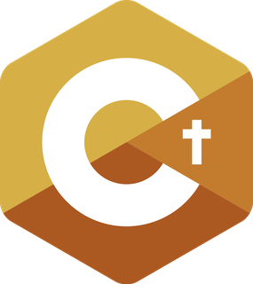

HolyC
The language of TempleOS, on Linux and macOS.
HolyC is the language Terry A. Davis wrote for TempleOS: C-like, with classes, default
arguments, a print-a-string statement and a JIT at its heart. hcc brings it to
Linux and macOS on x86_64 and arm64, as an ahead-of-time compiler, a JIT, a REPL and a
language server.
U0 Main()
{
"Hello world\n";
}
Hello world
A string on its own is a print statement, U0 is void, and
Main is called for you. Save it as hello.HC and run it either way:
hcc hello.HC -o hello && ./hello # compile to a native binary
hcc -jit hello.HC # or compile in memory and run straight awayA taste of the language
class Animal
{
U8 *name;
I64 legs;
};
class Bird : Animal
{
Bool can_fly;
};
U0 Describe(Animal *a, U8 *sound = "...")
{
"%s has %d legs and says %s\n", a->name, a->legs, sound;
}
U0 Main()
{
Bird b;
b.name = "Tweety";
b.legs = 2;
b.can_fly = TRUE;
Describe(&b, "tweet"); // a Bird is an Animal
Describe(&b); // default argument
for (I64 i = 1; i <= 3; i++) {
switch (i) {
case 1: "one"; break;
case 2 ... 3: ", more"; break;
}
}
"\n";
}
Tweety has 2 legs and says tweet Tweety has 2 legs and says ... one, more, more
Where to go next
Getting startedBuild hcc, compile and run your first program.
LanguageEvery feature, with examples you can run.
Library guideStrings, files, hash tables, vectors, JSON.
Library referenceAll 700+ declarations in tos.HH.
ToolsCompiler flags, JIT, REPL, LSP, transpiler.
ExamplesComplete projects with expected output.
What hcc is
- A native compiler. HolyC is parsed to an AST, lowered to an SSA IR and emitted as x86_64 or AArch64 assembly, which the system C compiler assembles and links.
- A JIT.
hcc -jitassembles machine code in memory with a built-in assembler and runs it, with no files written. - A REPL.
hcc -replruns HolyC interactively, TempleOS style. - A language server.
hcc -lspgives editors diagnostics, hover, completion, go-to-definition, references and rename. - A standard library. Strings, files, hash tables, vectors, JSON, dates, threads, sockets and more, available in every program without an include.
It runs on Linux and macOS, on x86_64 and arm64. On Windows, use WSL2.